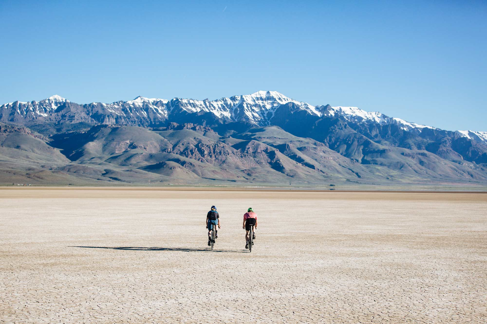
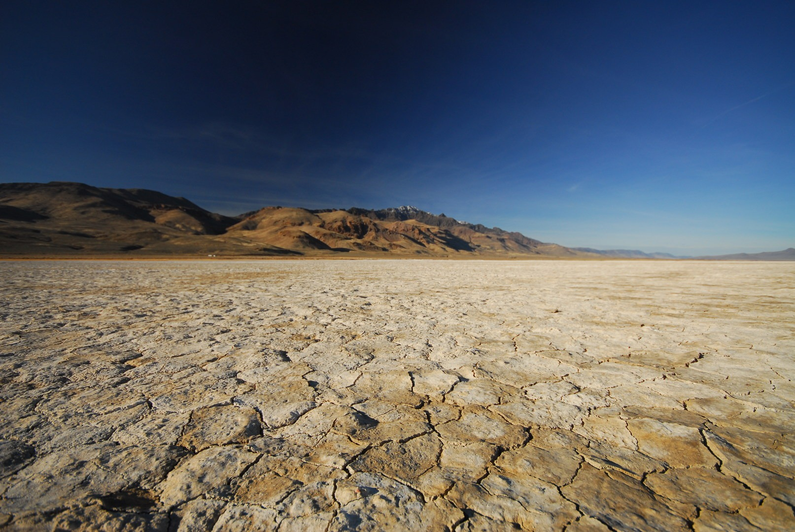
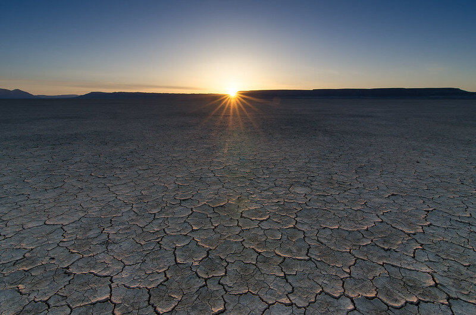
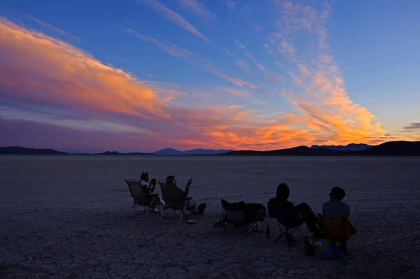
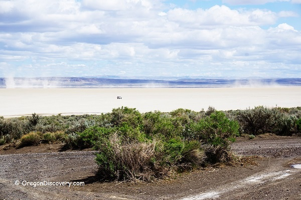
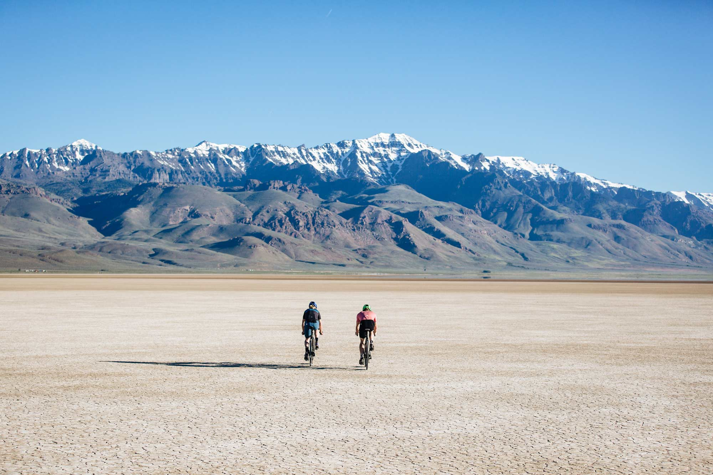
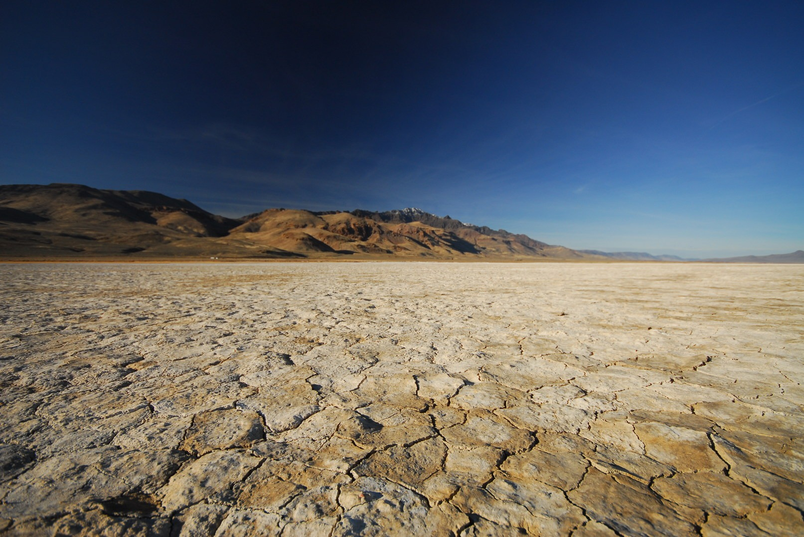
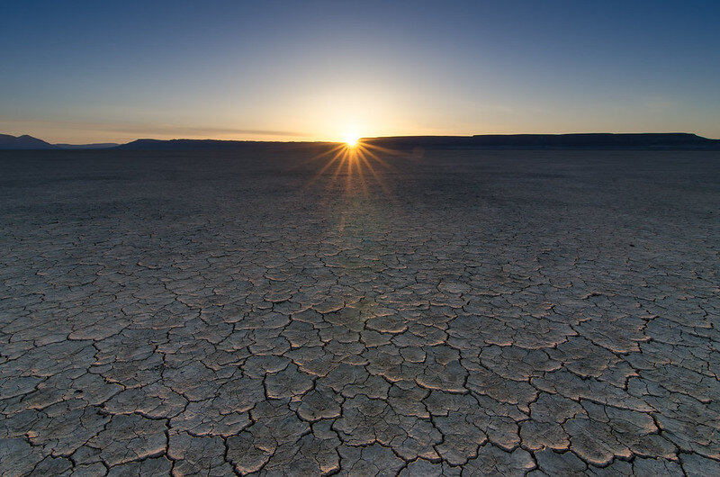
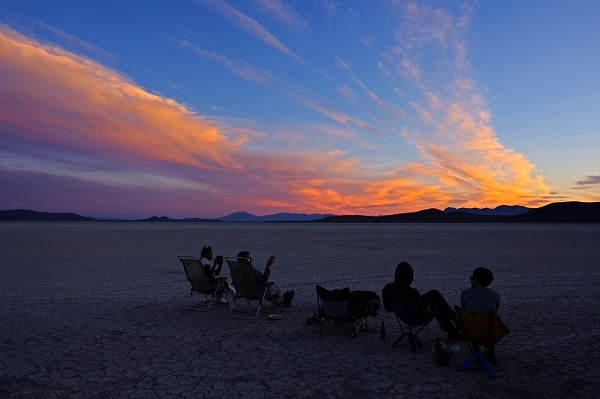
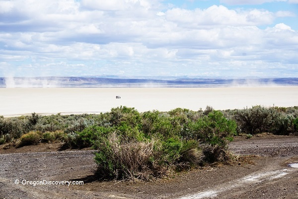

We're getting close! Alvoid will be happening at the end of this month. Please make sure your schedule is clear, you have what you need, and you've let us know you'd like to attend.
Who will be there?
Alvoid 2021 will be packed with chill, creative people. Here are some of the artists who will be
performing at Alvoid with embeds of some of their music:
KRYPTiC
Rapper based in Stayton, Oregon
Performing a ~45 min Evening set
[links to socials]
bleepy bloops
Electronic music producer based in Eugene, Oregon
Performing a ~30 min Night set
 @bleepybloops ·
@bleepybloops ·
 bleepy bloops ·
bleepy bloops ·
 bleepy-bloops ·
bleepy-bloops ·
 bleepy bloops
bleepy bloops
What should I expect from the Alvord?
The Alvord Desert is located 6 hours east of eugene in the four corners area between Oregon, Nevada, Idaho, and california. This lake basin desert landscape hosts the lowest light pollution in the lower 48 states, allowing a darker night sky, with more stars than almost anywhere in the United States. This unique landscape is 12-7 miles of totally empty space framed on all sides by mountains, providing a picturesque location for this festival. During the day the desert reflects the sky and creates mirages everywhere you look, and along with the stars and otherworldly sunsets It is truly in my top five Oregon locations. During the time of our festival the average temperatures range between 70 F during the day and as low as 30 F during the night. The area is also prone to sudden dust storms, but don't let this discourage you, it is a small price to pay for the beauty of this landscape. ( check the packing list to see what we recommend you bring)
 









What should I bring?
This page will remember what boxes you've checked, so you can use it as an interactive packing list! It won't work in incognito, or if you clear local storage.
What are the rules?
Rules: The alvord desert is essentially the exact same landscape as black rock city, the location of Burning Man. Due to this we will be following several principles of Burning Man whilst at the festival to foster a similar experience, and view of caretaking each other and the environment. Please see the link below: For those of you familiar with burning mans rules regarding water waste: One difference between the alvord desert and the black rock desert is that the alvord does fill with water later in the winter, so dumping water on the playa is less of a problem. Our goal is to create an awesome experience for all participants. Three full days of fun, friends, and shenanigans. If you would like to extend this invite please reach out to us first, it's most likely a yes, we just want a head count.( Email at the bottom of doc) We are hoping to have a variety of local bands across all genres to come play. (maybe some bigger people to, you'll have to wait and see) Bathrooms: There are no bathrooms on playa. However at the access road there is a one stall bathroom, it isn't a long drive. The ideal situation would be if you have to go to the bathroom, drive yourself, and as many people who need to go as possible. With water not being a huge issue to leave behind, you can bike, board, or walk off into the distance to pee. However our preference would be that we bring containers/portable toilets onto playa for all human waste. These could be packed out with you, or dumped in the bathroom when you do go. (At Burning Man I used a container at night, and it made life vastly easier, even if it's a little gross.) Burning Man Rules
How do I get there?
There will be gravel road no matter which access road you take. Make sure your vehicle can handle it, and make sure you have plenty of gas. You do not want to be stranded in the Alvord without fuel. There is a paved access road thru private property, and they charge like $5 or 10 for thru passage. The closest cheap gas is in Burns. You can get gas in Fields, but it's spendy.
| Are you attending Alvoid? | |
| Oh well. We hope to see you next year! | |
| What is your name? | |
| How many other people are you bringing? | |